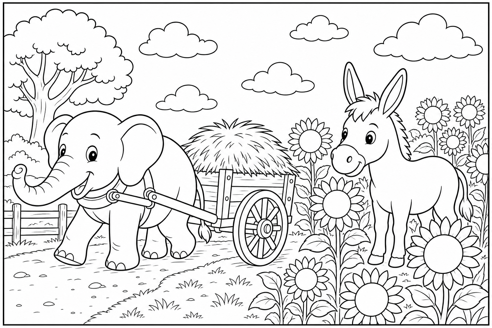

Cerca questa immagine in fondo al libro per colorarla come preferisci. Ricorda: il fieno dorato che cade sul campo e i semi nel sacchetto.
C'era una volta un Elefante di nome Franco, che gli amici chiamavano ... EleFranco. Di cognome faceva Franchini. Abitava nella sua accogliente casa nel paesino di FrancaVilla, un borgo agricolo di campi dorati, dove i girasoli alzavano la testa verso il sole, i carretti di legno scricchiolavano sulle zolle e l'aria sapeva di fieno tagliato e terra calda.
Era un pomeriggio ventoso e EleFranco aveva una commissione verde: «Devo andare al seminaio a comprare un sacchetto di semi per l'aiuola della Festa! Se il vento li spazza, resteremo senza fiori.» Guardò l'aiuola vuota davanti a casa: «Domani qui ci sarà un prato di colori.» Si calzò i suoi stivali giganti da contadino, marroni e con la suola a righe di aratura, prese una pala piccola e uscì di casa.
Il sentiero tra i campi tremava piano: THUMP THUMP THUMP In mezzo al campo, un asino grigio e testardo tirava con tutte le forze un carretto pieno di fieno. Era Girasole l'Asino — così chiamato per la criniera chiara come petali — e quella sera aveva le orecchie basse per la stanchezza. «EleFranco, aiuto!» ronzò. «Il carretto è incastrato in una buca e devo portare il fieno al recinto prima che gli agnellini abbiano fame!
Ma da solo non ce la faccio.» EleFranco posò la pala e guardò la ruota incastrata. «Non ti preoccupare, Girasole. Tiro io.»
Ma mentre agganciava la proboscide al carretto, la mente cominciò a vagare: pensò ai semi da seminare, ai fiori per la Festa, al profumo di erba fresca. Stava quasi per tirare senza chiedere quando Girasole gridò: «Aspetta, la ruota va sollevata prima!» Allora l'elefante scosse le grandi orecchie e disse ad alta voce la sua parola magica: "FOCUS!"«Hai ragione, Girasole. La forza vera chiede anche un consiglio.»
Tirò con decisione, ma il carretto uscì di scatto: il fieno volò in una pioggia dorata su tutto il campo, coprendo le zolle come una coperta soffice. «Ops,» disse EleFranco. «Ora sembra neve di fieno.» Il seminaio però rise: il vento aveva appena spazzolato semi sul campo, ma il fieno caduto li fermò uniformemente, come una semina perfetta fatta dal cielo.
Girasole raggiunse il recinto con il carretto vuoto ma felice; gli agnellini saltarono intorno all'asino grato e mangiarono il fieno caduto come se fosse una Festa improvvisa. «Vedi?» disse Girasole. «A volte chiedere aiuto regala più fieno di quanto ne avremmo messo sul carretto. E più amici sul sentiero.»
Il seminaio porse a EleFranco un sacchetto extra di semi — girasoli, margherite e un filo di lavanda per l'aiuola della Festa: «Per chi sa chiedere aiuto e seminare bontà.» EleFranco guardò il campo coperto di fieno dorato e sorrise: «Domani qui ci sarà un prato che canta — e ogni fiore ricorderà a qualcuno di sorridere.» La missione era compiuta senza nemmeno aprire la pala: i semi erano lì, profumati di terra e gratis, e il campo era di nuovo rigoglioso.
EleFranco capì allora la morale di quella giornata: La forza vera sa anche chiedere aiuto. 🌾
EleFranco guardò Girasole che sgranocchiava un fiore e scoppiò nella sua famosa risata: OH... OH... OH...